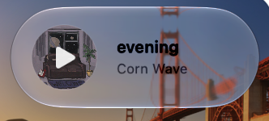
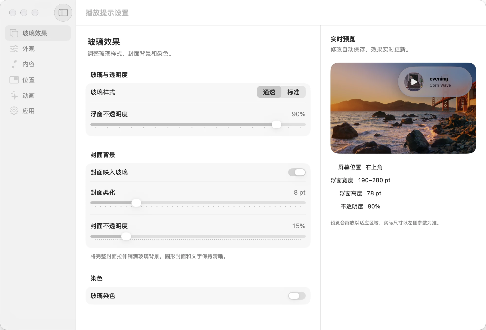

01 / HUD
换歌就提示。
切到下一首、或从没有播放变为开始播放时弹出；启动 App 时不弹窗。显示时长可调，也可以在暂停时保持显示。
macOS 换歌提示 · 原生 Liquid Glass
歌曲变化时，屏幕顶部弹出一个小浮窗：歌名、歌手和封面，看一眼就够。1.5 秒后，它自己消失。

01 / 只做一件事
不做灵动岛，不接管媒体键。
只在换歌的那一刻，告诉你正在放什么。
切到下一首、或从没有播放变为开始播放时弹出；启动 App 时不弹窗。显示时长可调，也可以在暂停时保持显示。
使用 macOS 的 Liquid Glass，可选通透或标准样式；还能给玻璃染上自己喜欢的颜色，或让封面映进玻璃里。
浮窗不抢键盘焦点，不打断正在用的 App。不占 Dock 和菜单栏；没有持续轮询，只在收到播放变化通知时读取。
封面从哪来？ Apple Music 直接读取；拿不到时，从 Apple 公开的 iTunes 目录补取。
了解隐私说明02 / 调成你的样子
设置窗口右侧用你正在听的歌和系统壁纸实时预览。位置、尺寸、透明度，改一下，桌面上的浮窗也跟着变。

03 / 支持的播放器
播放器换歌，浮窗就会出现。
不需要额外设置。
歌曲信息和封面都直接从「音乐」读取。第一次读取封面时，系统会询问是否允许访问「音乐」。
通过 Spotify 发出的系统通知识别换歌、暂停和停止；封面来自系统和 Spotify 提供的图片。
取决于 macOS 是否向第三方应用提供正在播放的信息，目前未逐一测试。
歌曲信息来自 macOS 私有的 MediaRemote 框架和播放器发出的系统通知。苹果以后更新系统，可能让部分功能失效。
当前版本没有 Developer ID 签名和苹果公证，请只从本项目的 GitHub Releases 下载。
在。播放提示不在 Dock 和菜单栏显示图标，关掉设置窗口后继续在后台监听换歌。想再改设置，在「应用程序」或启动台里重新打开它即可；要彻底退出，在设置的「应用」分类里点「退出播放提示」。
当前版本没有 Developer ID 签名和苹果公证。确认是从本项目 GitHub Releases 下载的后，到「系统设置 → 隐私与安全性」里点「仍要打开」。
播放提示需要读取「音乐」才能拿到封面。如果之前拒绝过权限，到「系统设置 → 隐私与安全性 → 自动化」里，允许「播放提示」访问「音乐」。拿不到时，App 也会尝试从 iTunes 目录补取。
不收集、不上传使用数据，没有统计代码。只有在播放器提供不了封面时，才会用歌名、歌手、专辑（或歌曲 ID）查询 Apple 公开的 iTunes 目录（itunes.apple.com）下载封面图片。
不能。当前安装包只支持 Apple Silicon Mac，并需要 macOS 26 或更新版本（Liquid Glass 需要新系统）。
让工具继续变好
分享使用体验、提交问题，或在 GitHub 留下一颗 Star，都能帮助项目继续完善。你也可以通过赞赏支持这个独立项目，赞赏不影响任何功能。
在 GitHub 关注项目感谢每一份反馈与支持。